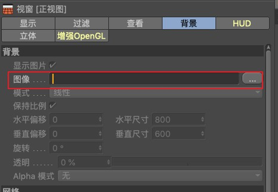

<!DOCTYPE html>
<html lang="en">

<head>
  <meta charset="UTF-8">
  <meta name="viewport" content="width=device-width, initial-scale=1.0">
  <meta http-equiv="X-UA-Compatible" content="ie=edge">
  <title>结合实景</title>
  <link rel="stylesheet" href="../../css/normalize.css">
  <link rel="stylesheet" href="../../css/styles/agate.css">
  <link rel="stylesheet" href="../../css/dark.css">
  <script src="../../js/jquery-3.2.1-compressed.js"></script>
  <script src="../../js/highlight.pack.js"></script>
  <script src="../../js/index.min.js"></script>
</head>

<body>
  <aside id="sidebar">
    <section id="catalog">
      
      目录
    </section>
  </aside>
  <div id="showCatalog">
    
  </div>
  <article id="container">
    <hgroup>
      <h1 id="title">结合实景</h1>
    </hgroup>
    <section>
      <h2>三视图添加图片辅助</h2>
      <p>
        按 shift + v 调出视窗面板，切换到 “背景” tab，在图像一项导入一张图片，用于建模时的参考。
        <figure>
          
        </figure>
      </p>
    </section>
    <section>
      <h2>根据图片矫正摄像机</h2>
      <p>
        通过给摄像机添加 C4D 标签 “摄像机矫正”，根据图片添加表示实景空间的线、面，以此来矫正摄像机的方向。参见<a href="./标签.html">标签</a>。
      </p>
    </section>
    <section>
      <h2>运动跟踪视频</h2>
      <p>
        创建一个解析后的摄像机，解析后的摄像机自带关键帧，可以自动跟踪场景的运动，使得 3D 模型与视频素材的场景相融合。
        <ol>
          <li>菜单栏 - 运动跟踪 - 运动跟踪，点击后创建 “运动跟踪” 对象</li>
          <li>切换到 “影片素材” tab，在 “影片素材” 一项导入自己的视频素材</li>
          <li>切换到 “2D跟踪” 点击 “自动跟踪”，该步会载入素材，跟踪并记录下影片的一些参数点</li>
          <li>切换到 “3D跟踪”，点击运行 “运行3D解析器”，该步会将影片的参数点解析到 C4D 的三维空间里</li>
          <li>切换到 ”重建“，点击 ”运行场景重建“，创建出 ”扫描网格“ 和 ”扫描点云“（可选）</li>
        </ol>
        创建约束：
        <ol>
          <li>选中 ”运动图形“ 对象，点击 菜单栏 - 运动跟踪 - 约束 - 创建位置约束，点击一个点作为约束点，此时会添加一个 ”位置约束“ 标签。</li>
          <li>选中 ”运动图形“ 对象，点击 菜单栏 - 运动跟踪 - 约束 - 创建平面约束，点击三个点作为一个约束面，此时会添加一个 ”平面约束“ 标签。</li>
        </ol>
        创建了约束后，可以选择 ”平面约束“ 标签，切换 ”轴心“ 选项，使这个约束平面对齐某个轴，从而使红绿色的参考点分布在自己想要的轴面上（比如 xz 平面）。
      </p>
    </section>
  </article>
</body>

</html>